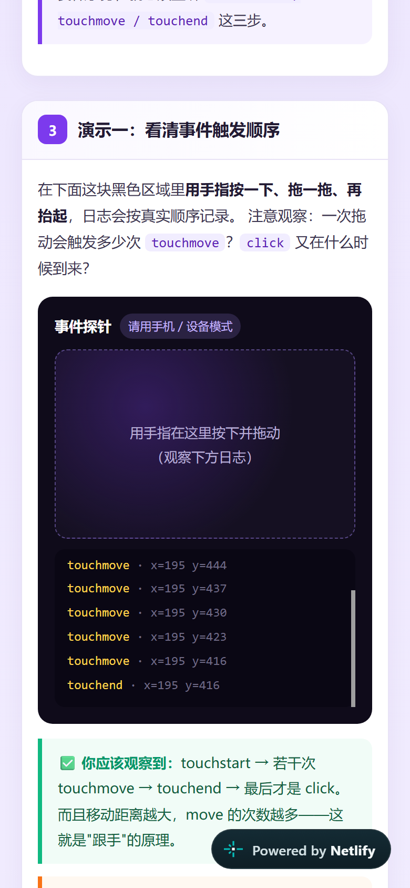
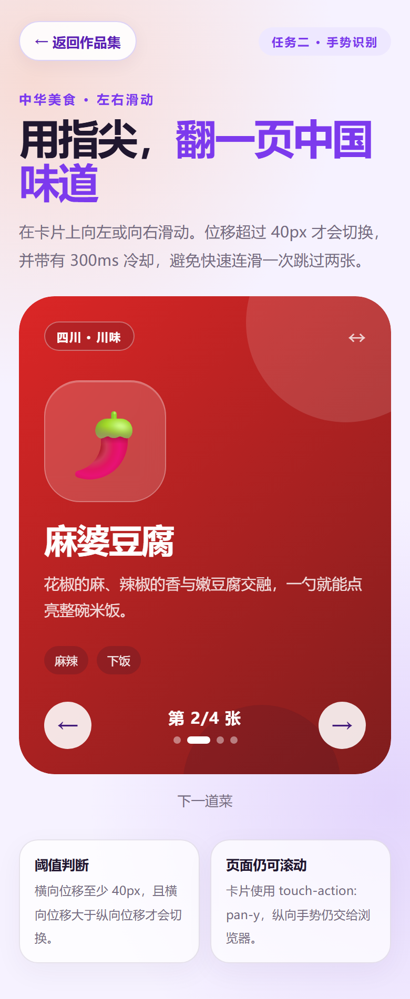
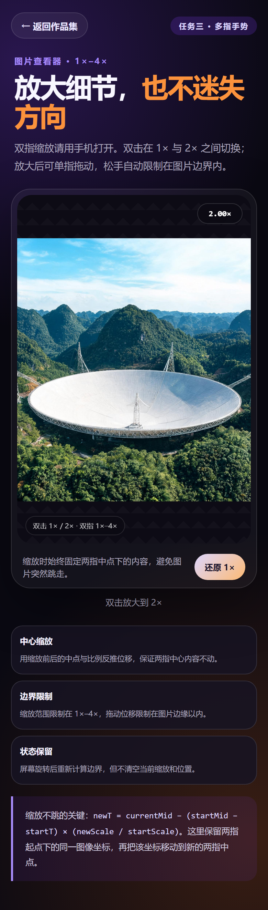
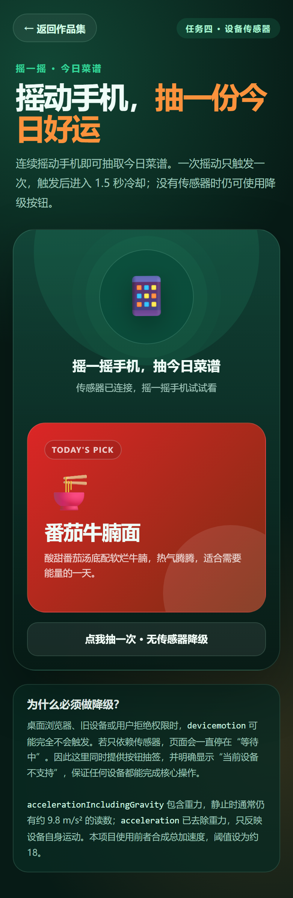

任务一 · 观察记录
一次拖动，到底发生了什么？
使用 Chrome DevTools 的 390×844 移动设备模式与触摸事件模拟，对课程页面的“事件探针”执行五种操作，并记录真实触发顺序。
1五种操作的事件记录
| 操作 | 实际触发顺序 | 计数 / 观察 |
|---|---|---|
| 单击 | touchstart → touchend → click | move 0 次；click 在 touchend 之后补发。 |
| 向上拖动 | touchstart → 11×touchmove → touchend | 纵向移动约 108px；拖动距离较大时没有补发 click。 |
| 向左快速滑 | touchstart → 4×touchmove → touchend | 横向移动约 220px；快速滑动同样没有补发 click。 |
| 双指触摸 | 2×touchstart → 5×touchmove → 2×touchend | 探针每个事件只读取 touches[0]，所以日志只显示第一指坐标；实际事件中 touches.length 为 2。 |
| 长按后抬起 | touchstart → 等待约 900ms → touchend → click | 本次探针未监听 contextmenu；长按抬起后 Chromium 仍补发了 click。 |
2三个验收问题
- 一次拖动里 touchmove 大约触发多少次？
没有固定次数。本次 108px 的拖动记录到 11 次 move，和移动距离、滑动速度以及浏览器采样频率有关：移动越远、速度越慢，通常采样次数越多。 - click 出现在 touchend 之前还是之后？
正常点击时 click 出现在 touchend 之后；本次点击约为 touchstart → touchend → click。明显拖动或快速滑动后，浏览器通常不再补发 click。 - 把 touchend 换成 touchcancel 会发生什么？
正常抬手不会再执行业务逻辑；touchcancel 表示手势被系统或浏览器中断，例如页面滚动、来电或系统手势接管。代码应重置拖动状态并回滚预览，而不是像正常完成一样提交结果。
3轨迹草图
坐标日志显示，手指从起点连续经过多个采样点后离开探针区域。下面的示意图对应“向上拖动”和“向左快速滑”两条路径。
向上拖动：约 11 个 touchmove
向左快速滑：约 4 个 touchmove
4一个坑与解决办法
坑：在任务二中，如果只监听触摸坐标而不处理浏览器默认滚动，横向滑动容易先被页面纵向滚动抢走，导致坐标断断续续，甚至触发 touchend 时已经偏离手势方向。
解决：卡片容器使用 touch-action: pan-y，保留纵向页面滚动；在 touchmove 中仅在横向位移明显更大时调用 preventDefault()。这样左右滑动由脚本接管，上下滑动仍可正常浏览页面。
任务三还进一步在图片容器上使用
touch-action: none，因为图片查看器需要完全接管双指缩放和拖动，不能让浏览器同时执行页面缩放或滚动。5本次 AI 提示词记录
1. 原始任务提示词： “这堂课有新的项目了，要按照链接里的要求完成，完成后发布 GitHub，项目就在之前上传 GitHub 仓库的文件夹里完成，完成任务一到任务四。” 2. 实现提示词摘要： “读取 mobile-events-lesson 页面任务一到任务四；在现有静态作品集中创建 mobile-gesture.html、mobile-zoom.html、mobile-sensor.html 和任务一报告；严格使用 jhy_ 前缀、姓名贾皓尧、学号 24001011116，并完成手机端交互、边界限制、权限与降级逻辑。” 3. 验证提示词摘要： “在 390×844 移动设备模式下逐项测试滑动阈值、300ms 冷却、双指缩放、双击 1×/2×、边界限制、摇动冷却和无传感器降级，并生成运行截图。”
6运行截图与项目入口
截图均在 390×844 移动设备视口中生成。任务四在无真实传感器时展示降级按钮与手动抽取结果。



